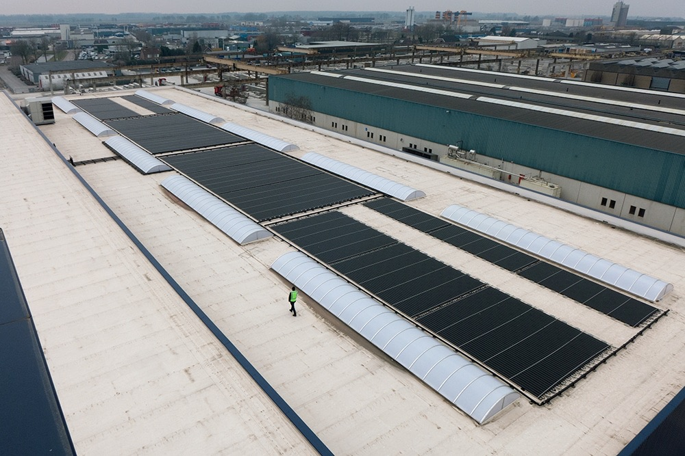

Praktijkvoorbeeld · Van Nieuwpoort Prefab Beton, Kampen (voorheen Betonson)
Volledig gasloos met bodemwarmte
De vloerplaten drogen bij hoge temperatuur in een verhardingskamer, een proces dat veel energie kost. R&R Systems ontwierp bij de bouw van de fabriek een systeem met 4.200 meter energieheipalen, 1.600 m² energiecollectoren en een warmtepomp van 500 kW. Die levert constant 41 tot 45 °C voor het drogen van de platen en verwarmt de hal van 130 bij 60 meter. Sinds januari 2024 draait ook de droogkamer van de ribcassettehal op warmtepompen: de fabriek is volledig gasloos.
75%minder gas in de eerste fase
8,4 jaarterugverdientijd
100%warmtepompen sinds 2024
Bekijk de case bij R&R Systems“Het zeer innovatieve systeem van R&R voor energiebesparing heeft ervoor gezorgd dat het gasverbruik met 75% gedaald is.”
Dhr. Keiholtz, technisch projectdirecteur (destijds Betonson)